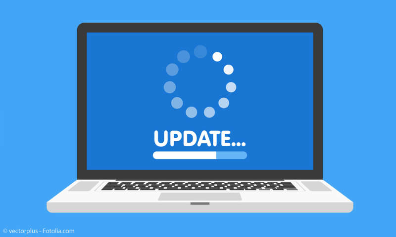

Sur cette page, vous trouverez une présentation des solutions que l'on vous propose.
Nos experts recommendent CyberSec :
"Depuis que j'utilise l'édition suprême de CyberSec antivirus, je ne peux plus m'en passer. Probablement le meilleur antivirus que j'ai utilisé dans ma vie" - Adrien Morin
Un nettoyage rapide et complet de votre appareil.
Se débarasser des fichiers indésirables n'a jamais été aussi facile. Procédez à un nettoyage ultra rapide de votre appareil grâce à notre téchnologie qui parcours tout les fichiers de votre ordinateur de manière quasi-instantanée. Cette tache s'effectue en arrière plan de manière à ce que vous puissiez continuer à travailler pendnant que notre anti-virus explore votre ordianteur. Pas besoin d'attendre la fin de l'analyse. Travailliez en toute sérénité avec CyberSec.
Une protection contre les virus et les malwares en temps réel.
Optez pour une protection qui vous suit secondes par secondes avec notre solution de protection en temps réel de votre machine. Notre anti-virus tournera en arrière plan pendant l'utilisation de votre machine ce qui nous permettra de constament analyser si votre PC n'a pas été infecté, ainsi que tous les téléchargements que vous éffectuerez sur votre machine. Et tout cela sans consommer trop d'énergie !
Un outil de mise à jour automatique de votre système.
Soyez toujours sur la dernière version de Windows/Mac/Linux disponible pour vous grâce à notre outil de mise à jour intelligente. Être à jour contribue énormément à se protèger contre les nouvelles menaces qui sont crées chaque jour. Notre outil vous aide en recherant pour vous des mises à jour pour votre système et vous les propose de façon à ce que vous puissiez les installer quand vous voulez.

Une assistance dédiée pour vous aider dans la protection de votre appareil.
Nous proposons à tous nos clients qui le souhaitent une assistance opérationelle et professionelle pour vous aider à mieux faire attention à la sécurité de votre PC. Notre assistance est disponible 24h/24 et 7j/7 pour nos "robots-assistants" qui vous permettent de trouver de l'aide à n'importe quel moment et à un large panel d'horaire pour notre assistance humaine (la liste des horaires est à retrouver directement sur notre logiciel.)